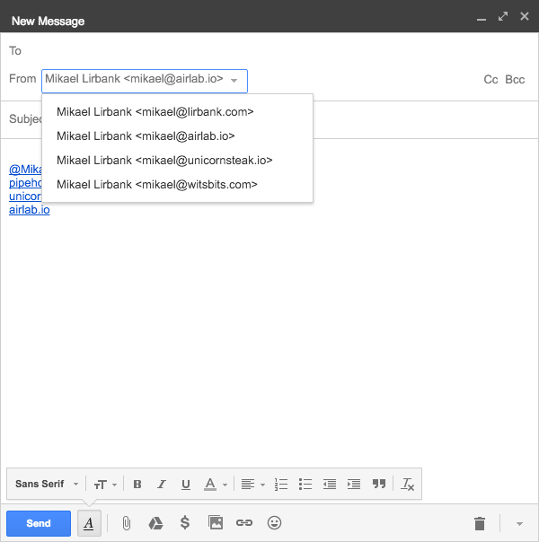

This guide explains how to configure and authorize Gmail to send emails from another email address you own.
Let's use an example. Say you signed up for PIPE with a Gmail account where
the primary email address is john.doe@example.com, but you but
want your outbound emails to originate from john@example.com.
If john@example.com isn't configured as an alias for your Gmail
account, you'll have to add it, which we'll go through in the next steps.
Note that these instructions are actually more related to Gmail than to PIPE, but since PIPE relies on Gmail, and configuring Gmail to send using alias email addresses sometimes can be a bit confusing, we felt it would be good to put together a few steps to help with that.
In a web browser, sign in to your Gmail account (eg.
john.doe@example.com) and click the Compose
button to open a New Message dialog. Here you can click on the
From field to see all email addresses the current Gmail
account is authorized to send from.
Important: If you have multiple Google Accounts, double
check that you're signed in with the Gmail account you signed up for PIPE
with (eg. john.doe@example.com).
Here's an example:
If you see the the email address you want to use as the sending address in the list, well, then you’re good to go. If not, keep reading and you should be set up shortly.
Follow these steps to add a new email address you own as a sending alias
for your Gmail account.
Substitute john.doe@example.com with the primary email of your
Gmail account (the account you signed up for PIPE with) and
john@example.com with the email address you want to add as an
alias.
john.doe@example.comSettings (cogwheel icon, top right corner) and then SettingsAccounts tabjohn@example.com is not already in the listAdd another email address you ownjohn@example.com as the Email address and leave Treat as an alias checked. Click Next StepSend through example.com Mail (easier to set up), click Next StepSend Verification and close the dialog window.